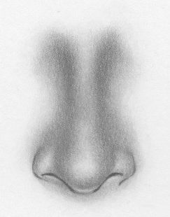

HOW TO DRAW A NOSE
HOME PAGE
Drawing a Nose can be a rewarding experience, This tutorial will guide you through the process. Here's a step-by-step tutorial for drawing a simple, realistic Nose.
Materials You'll Need
- Pencil
- Eracer
- Paper
Step 1: Basic Circle
- Start with a circle in the center of your paper. This will form the base of the nose's tip. Keep it light and simple, as it's just a guideline.
Step 2: Add Guideline for Nose Length
- Draw two vertical lines from the top of the circle extending upwards. These lines will define the height and structure of the nose bridge.
Step 3: Outline the Bottom Shape
- Add triangle-like shapes on either side of the circle. These represent the sides of the nostrils. Connect the bottom of the circle to create the base of the nostrils and ensure the width looks proportionate.
Step 4: Shade the Nose Bridge
- Begin shading lightly along the vertical lines. Shade inside the lines where the nose will curve inward. Gradually darken as you move towards the sides to give depth.
Step 5: Define the Nostrils
- Sketch the nostrils at the base. Add darker shading inside the nostrils to enhance depth, but don't make the lines too bold.
Step 6: Add Shadows and Highlights
- Start adding more shading to the sides of the nose, especially along the bridge and nostrils. Leave the top of the bridge and the center of the tip lighter to give it a rounded, highlighted look.
Step 7: Refine the Shading
- Work on smoothing out the shading using smooth transitions between the dark and light areas. Focus on the nostrils and the sides of the nose, ensuring they are darker than the nose bridge.

Step 8: Final Touches
- In the final step, refine the shading even more, softening edges and adjusting the contrast. This will make the nose look realistic, with light gently reflecting off the higher parts and shadows on the sides.
Step 9: Refine and Erase Guidelines
- Refine the Features: Add details to the nose. Adjust shapes and lines as needed.
- Erase Guidelines: Carefully erase any unnecessary guidelines to clean up your drawing.
Step 10: Finalize Your Drawing
- Outline: You can use a pen or marker to outline your drawing if you like.
- Shading (Optional): Add shading to give depth and dimension. Shade under the chin, around the nose, and in the eye sockets for a more realistic look.
for Improvement
- Practice Proportions: The human Nose has specific proportions that you can practice to improve accuracy.
- Study References: Look at photos or drawings of faces to understand different shapes and expressions.
- Be Patient: Drawing faces takes practice, so keep experimenting and refining your skills.
HOME PAGE